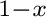
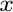
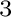
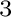

- 1
-
M. Asta, V. Ozolins, and C. Woodward.
A first-principles approach to modeling alloy phase equilibria.
JOM - Journal of the Minerals Metals & Materials Society,
53:16, 2001.
- 2
-
K. Binder and D. W. Heermann.
Monte Carlo Simulation in Statistical Physics.
Springer-Verlag, New York, 1988.
- 3
-
G. Ceder, A. van der Ven, C. Marianetti, and D. Morgan.
First-principles alloy theory in oxides.
Modelling Simul. Mater Sci Eng., 8:311, 2000.
- 4
-
J. W. Connolly and A. R. Williams.
Density-functional theory applied to phase transformations in
transition-metal alloys.
Phys. Rev. B, 27(8):5169, 1983.
- 5
-
D. de Fontaine.
Cluster approach to order-disorder transformation in alloys.
Solid State Phys., 47:33, 1994.
- 6
-
F. Ducastelle.
Order and Phase Stability in Alloys.
Elsevier Science, New York, 1991.
- 7
-
F. Ducastelle and F. Gautier.
Generalized perturbation-theory in disordered transitional alloys --
application to calculation of ordering energies.
Journal of Physics F -- Metal Physics, 6:2039, 1976.
- 8
-
B. Dünweg and D. P. Landau.
Phase diagram and critical behavior of the si-ge unmixing transition:
A monte carlo study of a model with elastic degrees of freedom.
Phys. Rev. B, 48:14182, 1993.
- 9
-
G. D. Garbulksy and G. Ceder.
Linear-programming method for obtaining effective cluster
interactions in alloys from total-energy calculations: application to the fcc
pd-v system.
Phys. Rev. B, 51(1):67, 1995.
- 10
-
R. Kikuchi.
A theory of cooperative phenomena.
Phys. Rev., 81:988, 1951.
- 11
-
A. F. Kohan, P. D. Tepesch, G. Ceder, and C. Wolverton.
Computation of alloy phase diagrams at low temperatures.
Comput. Mater. Sci., 9:389, 1998.
- 12
-
G. Kresse and J. Furthmüller.
Efficiency of ab-initio total energy calculations for metals and
semiconductors using a plane-wave basis set.
Comput. Mater. Sci., 6:15, 1996.
- 13
-
G. Kresse and J. Furthmüller.
Efficient iterative schemes for ab initio total-energy calculations
using a plane-wave basis set.
Phys. Rev. B, 54:11169, 1996.
- 14
-
D. B. Laks, L. G. Ferreira, S. Froyen, and A. Zunger.
Efficient cluster expansion for substitutional systems.
Physical Review B, 46:12587, 1992.
- 15
-
M. Laradji, D. P. Landau, and B. Dünweg.
Structural properties of SiGe alloys: A monte carlo
simulation with the stillinger-weber potential.
Phys. Rev. B, 51:4894, 1995.
- 16
-
M. E. J. Newman and G. T. Barkema.
Monte Carlo Methods in Statistical Physics.
Clarendon Press, Oxford, 1999.
- 17
-
V. Ozoliņš, C. Wolverton, and A. Zunger.
Cu-au, ag-au, cu-ag, and ni-au intermetallics: First-principles study
of temperature-composition phase diagrams and structures.
Phys. Rev. B, 57:6427, 1998.
- 18
-
J. M. Sanchez, F. Ducastelle, and D. Gratias.
Generalized cluster description of multicomponent systems.
Physica, 128A:334, 1984.
- 19
-
R.C. Singleton.
An algorithm for computing the mixed radix fast fourier transform.
IEEE Transactions On Audio And Electroacoustics, AU-17:93,
1969.
- 20
-
M. H. Sluiter.
Imr-cvm code, 2000.
http://www-lab.imr.tohoku.ac.jp/~ marcel/cvm/cvm.html.
- 21
-
P. E. A Turchi.
In J. H. Westbrook and R. L. Fleisher, editors, Intermetallic
Compounds: Principles and Practice, volume 1, page 21, New York, 1995. John
Wiley.
- 22
-
A. van de Walle and M. D. Asta.
Self-driven lattice-model monte carlo simulations of alloy
thermodynamic properties and phase diagrams.
Model. Simul. Mater. Sc., 10:521, 2002.
- 23
-
A. van de Walle, M. D. Asta, and G. Ceder.
The Alloy Theoretic Automated Toolkit: A user guide.
Calphad, 26:539-553, 2002.
- 24
-
A. van de Walle and G. Ceder.
Automating first-principles phase diagram calculations.
J. Phase Equilib., 23:348-359, 2002.
- 25
-
A. van der Ven, M. K. Aydinol, G. Ceder, G. Kresse, and J. Hafner.
First-principles investigation of phase stability in
licoo .
.
Phys. Rev. B, 58:2975, 1998.
- 26
-
C. Wolverton, V. Ozoliņš, and A. Zunger.
Short-range-order types in binary alloys: a reflection of coherent
phase stability.
J. Phys.: Condens. Matter, 12:2749, 2000.
- 27
-
C. Woodward, M. Asta, G. Kresse, and J. Hafner.
Density of constitutional and thermal point defects in L1 AlSc.
AlSc.
Phys. Rev. B, 63:094103, 2001.
- 28
-
A. Zunger.
First principles statistical mechanics of semiconductor alloys and
intermetallic compounds.
In P. E. Turchi and A. Gonis, editors, NATO ASI on Statics and
Dynamics of Alloy Phase Transformation, volume 319, page 361, New York,
1994. Plenum Press.
- 29
-
A. Zunger.
Spontaneous atomic ordering in semiconductor alloys: Causes,
carriers, and consequences.
MRS Bull., 22:20, 1997.
avdw@alum.mit.edu Wed, Dec 6, 2023 12:55:16 PM